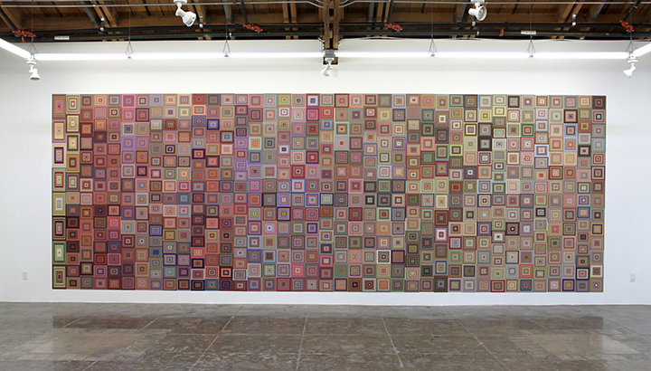

April 1, 2017 // Digital Vertigo: A New Media Symposium
The art of making new media
Noë asks: what is art?
why does it matter to us?
what does it tell us about ourselves?
Art unveils us to ourselves
What is new media art revealing to us about ourselves?
Technology
- Technology is natural for us.
- The scope of technology includes broad technological practices (language, picture making, dancing).
- Technology let us do new things; they help us solve problems and frame new problems.
- Tools are only useful against the background of our needs and capacities.
The doornob exits in context with a whole form of life.
Design serves a function, organizing and enabling.
We take design, and how it organizes us, for granted
Technologies, by design, organize us, and in doing so, they make us the kind of creatures that we are.
Cindy Baker, Lipsticks and bullets, 2015, detail cast bronze found objects, glazed ceramics, steel and glass readymade cabinet
Art are practices for investigating the complicated patterns of our organization.
“A work of art is a strange tool; it is an implement or instrument that has been denuded of its function. Art is the enemy of function, it is the perversion of technology” - Noë (98)
what is this? / what is this for?
Jason Salavon, All the Ways (The Simpsons), 2016, Custom Wallpaper.
Art challenges us to understand it, requiring us to think about what we take for granted.
As such, art acts as a strange tool for investigating/revealing ourselves.

Laura Poitras, ANARCHIST: Data Signal with Doppler Tracks from a Satellite (Intercepted May 27, 2009), 2016.
Art as a form of research about ourselves.
Artists aim to rethink, reanalyze, renew, rewrite, recreate, and overall, reorganize.
- Our lives are structured by organization
- Art is an engagement with how we are organized.
- By bringing our organization into view, it is a way to better understand that organization.
- And doing this, art reorganizes us.
Technology → Organization → New Media
Dynamics of change (reorganization), is at the crux of new media.
Are we reorganizing
for the better?
"Through art-making, we are emancipated from the organization and regulation of current and past technologies." -Noë
What else is possible?

#Additivism
by Morehshin Allahyari and Daniel Rourke
Material Speculation: ISIS
by Morehshin Allahyari
Material Speculation: ISIS
by Morehshin Allahyari